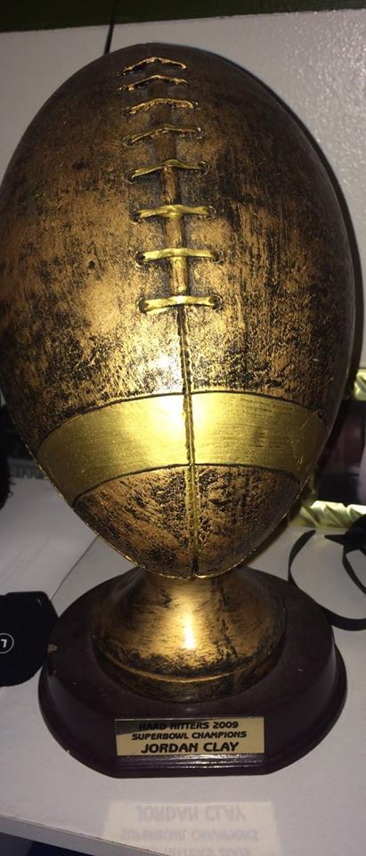
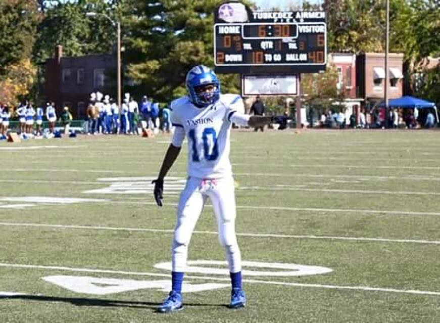

<!DOCTYPE html>
<html lang="en">

<head>
    <meta charset="UTF-8">
    <meta name="viewport" content="width=device-width, initial-scale=1.0">
    <meta http-equiv="X-UA-Compatible" content="ie=edge">
    <title>Jordan's Life</title>
    <!-- Latest compiled and minified CSS -->
    <link rel="stylesheet" href="node_modules/bootstrap/dist/css/bootstrap.min.css" >
    <!-- Optional theme -->
    <link rel="stylesheet" href="node_modules/bootstrap/dist/css/bootstrap-theme.min.css" >
    <!-- Latest compiled and minified JavaScript -->
    <script src="node_modules/jquery/dist/jquery.min.js"></script>
    <script src="node_modules/bootstrap/dist/bootstrap.min.js" >
    <link rel="stylesheet" href="styles.css">
</head>

<body>
    <nav class="navbar navbar-default">
        <div class="container-fluid">
            <!-- Brand and toggle get grouped for better mobile display -->
            <div class="navbar-header">
                <button type="button" class="navbar-toggle collapsed" data-toggle="collapse" data-target="#bs-example-navbar-collapse-1"
                    aria-expanded="false">
                    <span class="sr-only">Toggle navigation</span>
                    <span class="icon-bar"></span>
                    <span class="icon-bar"></span>
                    <span class="icon-bar"></span>
                </button>
                <a class="navbar-brand" href="about.html">About Me</a>
            </div>

            <!-- Collect the nav links, forms, and other content for toggling -->
            <div class="collapse navbar-collapse" id="bs-example-navbar-collapse-1">
                <ul class="nav navbar-nav">
                    <li class="active"><a href="updates.html">What's New <span class="sr-only">(current)</span></a></li>
                    <li><a href="contact.html">Contact</a></li>
                    <li class="Education">
                        <a href="education.html" class="dropdown-toggle" data-toggle="dropdown" role="button" aria-haspopup="true" aria-expanded="false">Education <span class="caret"></span></a>
                        <ul class="dropdown-menu">
                            <li><a href="elem.html">Elementary</a></li>
                            <li><a href="middle.html">Middle School</a></li>
                            <li><a href="high.html">High School</a></li>
                            <li><a href="college.html">College</a></li>
                            
                            <li role="separator" class="divider"></li>
                            <li><a href="memories.html">Greatest Memories</a></li>
                            <li role="separator" class="divider"></li>
                            <li><a href="occupations.html">Occupations</a></li>
                        </ul>
                    </li>
                </ul>
                <form class="navbar-form navbar-left">
                    <div class="form-group">
                        <input type="text" class="form-control" placeholder="Search">
                    </div>
                    <button type="submit" class="btn btn-default">Submit</button>
                </form>
                <ul class="nav navbar-nav navbar-right">
                    <li><a href="#">Siblings</a></li>
                    <li class="dropdown">
                        <a href="#" class="dropdown-toggle" data-toggle="dropdown" role="button" aria-haspopup="true" aria-expanded="false">Sports <span class="caret"></span></a>
                        <ul class="dropdown-menu">
                            <li><a href="basketball.html">Basketball</a></li>
                            <li><a href="baseball.html">Baseball</a></li>
                            <li><a href="football.html">Football</a></li>
                             <li><a href="cross.html">Cross-Country</a></li>
                            <li><a href="track.html">Track and Field</a></li>
                            <li role="separator" class="divider"></li>
            <!-- /.navbar-collapse -->
        </div>
        <!-- /.container-fluid -->
    </nav>
    <center>
    <h1> Football Life </h1>
    <h3>
     After looking at my home page and seeing my weight and height you'd probably never picture me playing football. I started off my first year of football at City Rec, with a team called the "Rowdy Boys" I played quarterback, as sore as I was every night going home, I loved that position. Even though I was playing 12 unlimited. After going maybe 1-9 in the season I was recruited by a new team called the "Hardhitters" another team in the City Rec organization. My first year playing with them we had went to the superbowl and won. We received a nice trophy, as you can see the one below. Made a lot of new long term friends, but sadly. As years passed our head coach had passed away. After playing 3 years of City Rec football, I didn't really see myself playing in High School. However, I started back playing my Junior and Senior year of high school.I planned on playing my sophomore year but during a practice, we were doing 1on1 with a runnerback and someone on the opposite side, I was the person tackling.. I went in head first and was laid out gasping for breathe, although the team and coaches didn't know because they were excited about the compact of the tackle. Days later I realized that I had a stage 3 concussion. After a couple of weeks I was good, didn't go back that year. We won our PHL championship game my senior year, but lost next round. I played wide receiver, free safety, kickoff and kickoff return. We had a really good team. Although I went through a major injury, it made me atough person today.
    </h3>
    
     
         </center>
         </center>
    